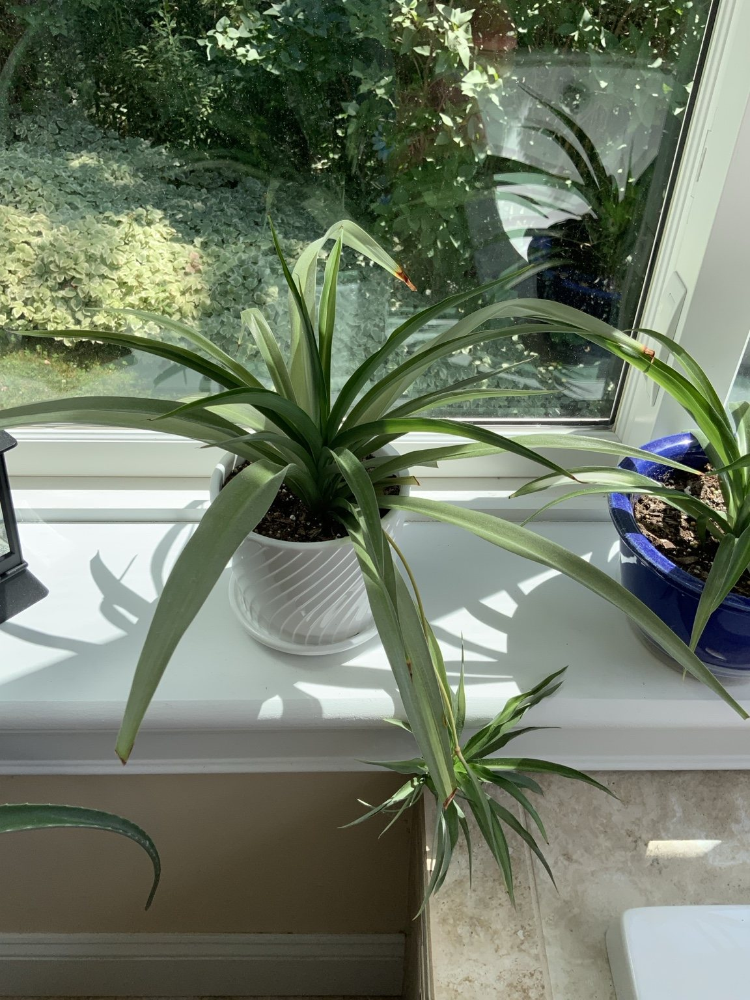
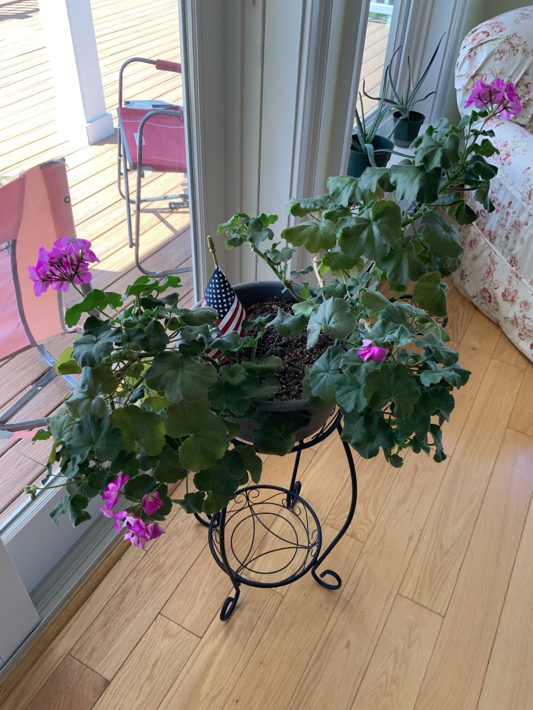
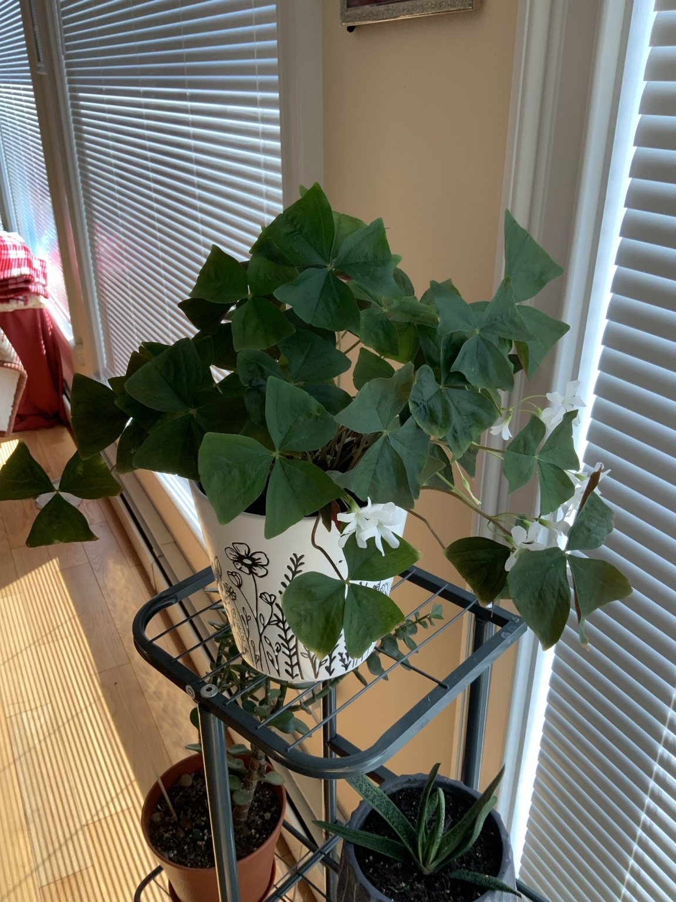
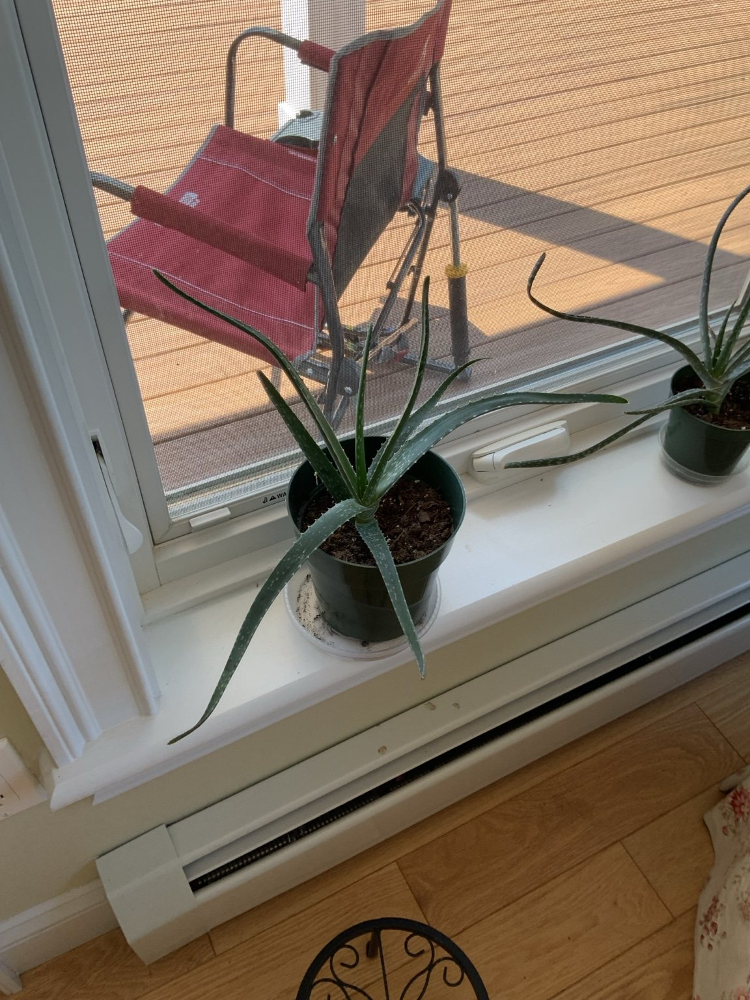
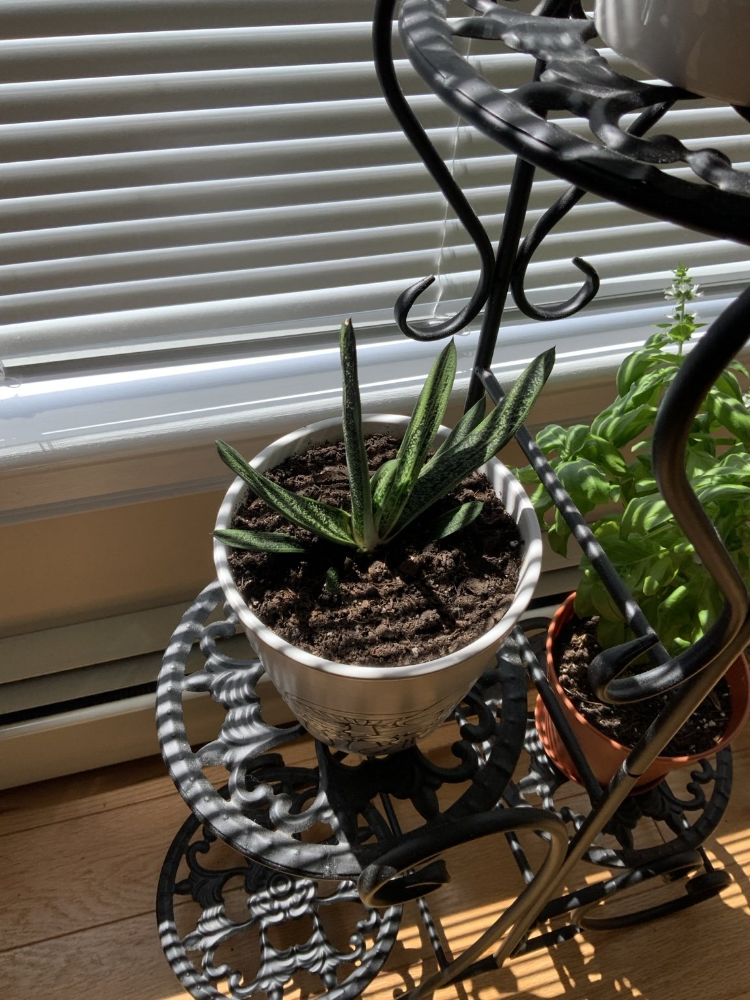

All currently recorded houseplants and their individual care pages.
Mother plant, pups, division, repotting, and watering.
Mother plant pruning, cuttings, and monthly growth tracking.
Light, humidity, watering, and leaf care.
Succulent watering, light, pups, and repotting.

Watering, feeding, brown-tip prevention, and plantlets.

Bloom cycle, watering, light, and repotting.

Growth, dormancy, watering, and light.

Indoor light, pruning, feeding, and overwintering.

Low-water succulent care and offsets.